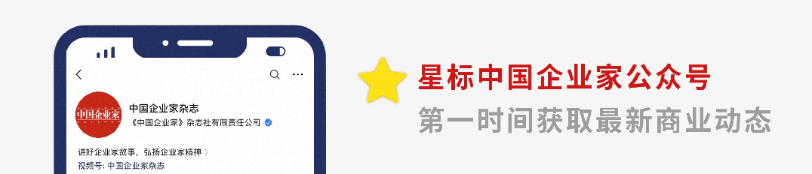
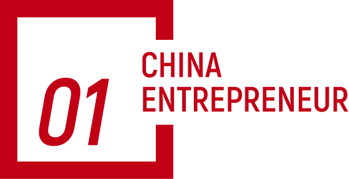
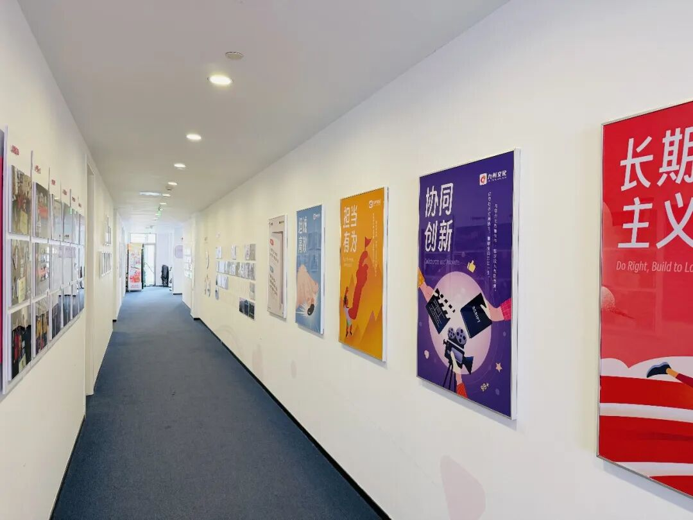
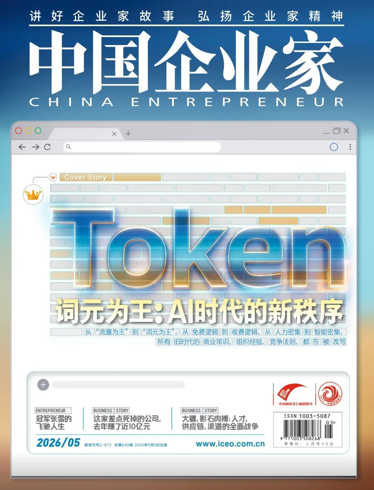

📈 他，短剧一哥，30岁踩中3次风口，还是要改行
Short Drama King Jiuzhou Founder Wang Jiacheng Pivots to AI at 30


文｜《中国企业家》见习记者reporter[rɪˈpɔːrtər] n. 记者 陈浩
见习编辑editor[ˈedɪtər] n. 编辑｜张昊 编辑 马吉英
4月的一个下午，《中国企业家》在杭州见到了嘉兴九州文化传媒有限公司（以下简称“九州”）创始人founder[ˈfaʊndər] n. 创始人、董事长汪家城。他极健谈，一个多小时过去，茶水已喝到见底，他才刚讲完一段关于AI视频生成模型model[ˈmɒdəl] n. 模型的判断。
两个月前，字节跳动正式发布release[rɪˈliːs] v. 发布新一代视频生成模型Seedance 2.0，它能在15秒内生成多镜头电影级画面。行业瞬间“变天”，《黑神话：悟空》制作人冯骥的评价很直接：AIGC的“童年时代infancy[ˈɪnfənsi] n. 初期；童年时代”结束了。
汪家城是短剧头部公司中最早察觉到风向trend[trend] n. 趋势；风向、又最早行动的人。2025年下半年起，九州把真人剧的产能砍掉一半多，腾出来的预算budget[ˈbʌdʒɪt] n. 预算改作AI生成师的工资和算力开销。半年时间，公司从1500人扩张expand[ɪkˈspænd] v. 扩张到约4000人，八成新员工是AI创作者。到2026年3月，九州对外公布的单月制播量是1399部新剧，很多从业者practitioner[prækˈtɪʃənər] n. 从业者在公开场合称这是“断崖式领先”。
他把公司节奏彻底拉起来了，在招人方面也简单粗暴——只要足够勤奋diligent[ˈdɪlɪdʒənt] adj. 勤奋的和热爱。他分享了一个真实的故事：一位月薪3000元的纺织厂女工进入九州后，转型transform[trænsˈfɔːrm] v. 转型；转变成AI影视工作者，一部爆款AI短剧的单月分成收益就达几十万元。
汪家城的野心ambition[æmˈbɪʃən] n. 野心；抱负已不止于一家短剧公司，他想把AI、中国文化、中国劳动力，串成一个能输出全世界的内容生态：把“100个故事里挑1个翻译卖到国外”的旧出海逻辑，改成“100个故事直接用AI翻成多语种版本，全部上架”。
九州文化CEO仲佳奇 来源source[sɔːrs] n. 来源：受访者
九州文化CEO仲佳奇补充：“修仙、玄幻、武侠等题材genre[ˈʒɑːnrə] n. 题材；类型短剧，其实在海外有着相当体量的受众群体，我们接下来的重点之一就是这些中国故事的海外表达。”
在汪家城看来，AI是一个大到九州装不下的赛道arena[əˈriːnə] n. 领域；赛道。其实九州的体量并不算小，这家2021年8月在嘉兴注册的公司，从付费短剧的萌芽期一路做到行业头部——年产剧集近400部，年营收revenue[ˈrevənjuː] n. 营收；收入超40亿元，与点众科技、麦芽传媒被行业并称短剧“御三家”。
而行至这一规模，九州可查的对外股权equity[ˈekwɪti] n. 股权动作只有两笔：创立之初，盛大网络联合创始人陈大年以个人身份参与，“盛大系”的上海澄潭网络科技与上海远目投资合计持有约9%股权；2022年11月，大观资本投了一轮千万元级别投资investment[ɪnˈvestmənt] n. 投资。汪家城也向记者证实confirm[kənˈfɜːrm] v. 证实；确认了这一点，九州几乎没有什么投资方，核心团队就是包括他在内的三四个人，外部小额股权投资更像是创业初期老朋友的捧场。
“一家公司接受外部投资，本质上是把未来的收益预期折现discount[ˈdɪskaʊnt] v. 折现；贴现卖出去。如果你对自己有信心confidence[ˈkɒnfɪdəns] n. 信心，为什么要卖？”他解释，“只有当老板觉得公司被市场高估时，他才会套现，这意味着一切融资financing[ˈfaɪnænsɪŋ] n. 融资行为都是某种程度上的看空。”
关于投资，他有一套自己的“安全垫”理论：刚出社会时他能承受亏损一两万元，100万元身家时能承受亏损30万元，到了1000万元、1亿元时，承受线就按大致的比例提升，从不加杠杆leverage[ˈlevərɪdʒ] n. 杠杆。他厌恶的并不是风险risk[rɪsk] n. 风险本身，而是一种无法兜底的处境。
三代农村人的家庭背景给他刻下了某种本能：你挣到的每一分钱都来自时代红利dividend[ˈdɪvɪdend] n. 红利；股息，凭什么老天爷每一次都给你？他提到mention[ˈmenʃən] v. 提到《伤仲永》，不愿最后“泯然众人矣”。
他没碰过直播livestream[ˈlaɪvstriːm] n. 直播，电商也浅尝辄止，理由是链路太长，确定性差。即便是版权copyright[ˈkɒpiraɪt] n. 版权这个短剧公司的命脉业务，他也克制自己不重资产收购网文平台，而是投资了几十家小型版权方、签约几家编剧公司、自建一个体量不大的网文小站。
这一策略strategy[ˈstrætədʒi] n. 策略也伴随着相应的挑战。在内容深度和品牌势能上，九州相较于长视频系和听花岛这类精品厂牌并不占优势advantage[ədˈvæntɪdʒ] n. 优势；在渠道channel[ˈtʃænəl] n. 渠道端，九州与大平台方深度绑定，议价空间有限——2024年之前是巨量引擎，之后换成了红果。
在九州的世界里，现象级爆款、一手打造的当红明星都不是主角，它更像一座可以全天候开机的“内容工厂factory[ˈfæktəri] n. 工厂”，安静高效地生产视频商品，无比稳定。
汪家城接受这种状态state[steɪt] n. 状态。“对自己认知cognition[kɒɡˈnɪʃən] n. 认知能力以外的事情，不下重注”，他认为这是嘉兴老板特有的气质。浙江沿海coastal[ˈkoʊstəl] adj. 沿海的家家户户都不算穷困，没人逼着你非要如何，他因此有了一种在这个“搏命”行业里少见的边界感。
但他从不“躺平idle[ˈaɪdəl] adj. 无所事事的；躺平的”。保守conservative[kənˈsɜːrvətɪv] adj. 保守的与冒险，在他身上冲突又交融。
在AI这件事上，他的原话是“恨不得AI快点干死自己”——希望AI早日把九州现有的真人剧产线全部替代replace[rɪˈpleɪs] v. 替代掉。他不害怕被取代substitute[ˈsʌbstɪtjuːt] v. 取代，才30岁，他赌得起。

谈及出身origin[ˈɔːrɪdʒɪn] n. 出身；起源，汪家城并未刻意修饰。1996年12月出生，来自浙江嘉兴一带的寻常人家：父亲修织布机，母亲操作operate[ˈɒpəreɪt] v. 操作织布机，处在丝绸产业带上，家家户户都和织布有关。读完初中，再读了一年技校，他主动放弃了学业schooling[ˈskuːlɪŋ] n. 学业；学校教育，“成绩不出挑，穷孩子开智早，不如早谋生”。
2014年他18岁，那也是4G牌照license[ˈlaɪsəns] n. 牌照；许可证发放后的第一年，移动互联网用户规模激增。他进了一家在杭州、嘉兴、上海三地都有生意的移动广告公司，从最基层grassroots[ˈɡræsruːts] n. 基层；草根的销售岗做起，工作很简单：上游对接平台或自媒体大号，把广告位拿过来；下游对接广告主advertiser[ˈædvərtaɪzər] n. 广告主，加一笔钱把广告位卖掉。
这也是汪家城的商业启蒙enlightenment[ɪnˈlaɪtənmənt] n. 启蒙。客户client[ˈklaɪənt] n. 客户为什么投广告？因为投10元能挣回11元。客户为什么换平台platform[ˈplætfɔːrm] n. 平台？因为另一家的转化率conversion[kənˈvɜːrʒən] n. 转化率更高。客户什么时候会停？因为算出ROIROI[ɑːr oʊ aɪ] abbr. 投资回报率不划算了。短短几个月，他就摸到了流量traffic[ˈtræfɪk] n. 流量经济的逻辑。
不到一年，那家广告公司因经营management[ˈmænɪdʒmənt] n. 经营；管理不善倒闭，汪家城失业了，但他并不打算继续打工。他手上几个自媒体账号接广告的月收入income[ˈɪnkʌm] n. 收入，已经超过了工资。彼时朋友圈广告、公众号软文都还是新生意，他能拿到很好的报价，“被迫”失业反而把他推向了更独立independent[ˌɪndɪˈpendənt] adj. 独立的的位置。
不到20岁，他成立establish[ɪˈstæblɪʃ] v. 成立；建立了自己的广告公司，主业有两块：一是微信朋友圈广告，二是网络小说的CPS（按成交金额结算）广告。后者是个新模式，用户在小说平台充值recharge[ˌriːˈtʃɑːrdʒ] v. 充值100元，平台抽走10元，剩下90元归他这种分销方，再由其向下游二次分配。看上去链条很长，但执行execute[ˈeksɪkjuːt] v. 执行能力到位的情况下，每一环都能吃到利差。
他逐步摸到了几条规律pattern[ˈpætərn] n. 规律；模式：一是网文用户的付费习惯很成熟，“花1块钱看下一章”是个可行的心理路径；二是这类生意的生命周期cycle[ˈsaɪkəl] n. 周期极短，一篇软文的有效投放窗口往往以小时计；三是即便单笔利润profit[ˈprɒfɪt] n. 利润微薄，只要规模做大，现金流就足够养一家公司。他的广告公司一度做到三四百人规模，也为日后九州的投流和分销基因gene[dʒiːn] n. 基因埋下了第一根桩。
2020年是个分水岭watershed[ˈwɔːtərʃed] n. 分水岭；转折点。线下消费受到冲击impact[ˈɪmpækt] n. 冲击；影响，整个移动互联网广告投放节奏被打乱了。同时，行业生态也肉眼可见地衰退decline[dɪˈklaɪn] n. 衰退；下降：自媒体阅读量下滑、广告主预算收紧、CPS分销的转化率持续走低。
汪家城开始系统地复盘review[rɪˈvjuː] v. 复盘；回顾，过去几年到底哪些公司在增长，他最终列出三家——字节跳动、小红书、拼多多。这其中他最感兴趣的是字节跳动，按他的分类category[ˈkætəɡɔːri] n. 分类；类别法，这本质上是一家“广告公司”，跟自己的业务最相似。
他扒了一遍字节跳动的成长史，得出两个结论conclusion[kənˈkluːʒən] n. 结论。
第一，它吃到了“全球global[ˈɡloʊbəl] adj. 全球的内容视频化”的红利，视频用户的体量比文字用户多近十倍，把今日头条做成视频版就成了，这就是后来的抖音。
第二个结论很反直觉：广告库存大的平台，单次曝光的精准度不仅没有下降，反而能通过算法algorithm[ˈælɡərɪðəm] n. 算法补平。
他向记者列了一组算式：彼时微信日活用户数12亿，每人每天最多看7次广告，库存inventory[ˈɪnvəntɔːri] n. 库存约84亿次曝光；抖音月活active[ˈæktɪv] adj. 活跃的；月活用户用户数7亿，每人每天可看30次以上，库存超过210亿次。逻辑上抖音的广告精准度precision[prɪˈsɪʒən] n. 精准度本该更差，因为它没有支付信息、社交关系等，但事实是抖音用算法把这部分缺失补平了，库存却比微信多好几倍，精准触达率和转化率反而更高。

因此在结果上看，字节跳动的广告advertising[ˈædvərtaɪzɪŋ] n. 广告不仅比微信卖得更贵，也卖得更多。汪家城认为，除了技术升级的要素，这还是一整套关于“流量×单次价值”的重新解构deconstruct[ˌdiːkənˈstrʌkt] v. 解构：把流量供给做大，把曝光价格用算法稳住，效率与规模就有了正反馈。
这套结论后来成了他所有商业判断的底座：如果一件事的本质是“流量×单次价值”，那么把任何一种内容形式转译成“视频+算法”的组合combination[ˌkɒmbɪˈneɪʃən] n. 组合，都可能是一笔好生意。


2021年，他第一次看到了“好生意”的机会opportunity[ˌɒpərˈtjuːnɪti] n. 机会——小说视频化。
这个判断今天看上去稀松平常commonplace[ˈkɒmənpleɪs] adj. 稀松平常的；普通的，放在当时却是少数派的认知。彼时的影视内容行业被三类玩家player[ˈpleɪər] n. 玩家；参与者瓜分：阅文等代表的网文公司，爱奇艺、腾讯视频、优酷代表的长视频平台，华策等代表的传统制作方——前者卖IP，中者买IP，后者拍故事。没有人意识到，短剧将开辟pioneer[ˌpaɪəˈnɪər] v. 开辟；开创出第四种生意。即便意识到的少数玩家，其切入方式也是在网上找现成小故事翻拍，并没有把这件事升华elevate[ˈelɪveɪt] v. 升华；提升到“小说视频化”的产业逻辑。
汪家城看到了机会，也清楚aware[əˈweər] adj. 清楚的；意识到的自己的优势。他干过CPS广告分销，知道“用户付费解锁unlock[ʌnˈlɒk] v. 解锁”是个跑得通的模式；他干过流量分销，知道一旦上游upstream[ʌpˈstriːm] adj. 上游的产能起来，发行端的钱并不难赚。唯一不懂的是内容，他一直自我描述为“网瘾少年+审美aesthetic[iːsˈθetɪk] n. 审美不好”，做的是商品而非作品。这种自知insight[ˈɪnsaɪt] n. 自知；洞察力反而让他下注更快：不懂内容就买内容，开始全网搜小说版权、拍成视频。
2021年8月，嘉兴九州文化传媒有限公司注册register[ˈredʒɪstər] v. 注册成立。汪家城为实控人controller[kənˈtroʊlər] n. 实际控制人，核心合伙人是他的几位嘉兴老乡。
头半年并不顺利。第一道坎是产能：传统影视团队不愿接这种“低端”活，自己的团队又没人会拍，只能外包outsource[ˈaʊtsɔːrs] v. 外包给散落的小剧组。第二道坎更致命fatal[ˈfeɪtəl] adj. 致命的：拍出来的剧没有买家。用户已经习惯了短视频免费，为短剧付费payment[ˈpeɪmənt] n. 付费；支付是个反直觉的销售行为。整个2021年下半年，公司的短剧业务都在靠传统tradition[trəˈdɪʃən] n. 传统业务养。
转机turnaround[ˈtɜːrnəraʊnd] n. 转机； turnaround来自快手。2021年，快手是行业里第一个对短剧买量开闸unleash[ʌnˈliːʃ] v. 释放；开闸的平台。投流通道一打开，闭环circuit[ˈsɜːrkɪt] n. 闭环；回路立刻形成：制作方拍小说改编剧，买流量分发，用户付费解锁后续剧集，平台和制作方按CPS分账。整个链条chain[tʃeɪn] n. 链条几乎是从付费网文平移过来的，汪家城对每一环都很熟悉。
还有政策“窗口期window[ˈwɪndoʊ] n. 窗口期；机遇期”。传统影视剧要去相关部门备案record[ˈrekɔːrd] v. 备案；登记，从立项到实拍、上线，整个周期按年算。而在2023年之前，短剧基本处于“先播后审、自审自播”的制度探索explore[ɪkˈsplɔːr] v. 探索期，从拍摄到上线只要一个月，试错成本被压到极低。
两年内，短剧从一个小众niche[niːʃ] n. 小众市场；利基赛道变成全民热点。2023年8月，《无双》上线8天充值流水破亿元，短剧的财富神话开始流传，新玩家蜂拥swarm[swɔːrm] v. 蜂拥而入：点众、麦芽、容量、掌玩、听花岛相继冒头。到2023年，九州国内加海外overseas[ˌoʊvərˈsiːz] adv. 海外的年收入达到40亿元，员工规模达到1500人，其中投流团队300到400人、编剧团队300到500人。“短剧一哥”的标签label[ˈleɪbəl] n. 标签，业内都默认贴在了它身上。
但行业的结构性structural[ˈstrʌktʃərəl] adj. 结构性的弱点也在此时显露。2023年5月，番茄小说团队悄然在抖音内部上线了红果短剧，此前他们用同样的“免费+广告”模式做到日活上亿，颠覆disrupt[dɪsˈrʌpt] v. 颠覆；破坏了付费阅读市场。三个月后，红果正式推出launch[lɔːntʃ] v. 推出；发布“剧集免费”，看广告即可解锁下一集。这个模式直接绕开了短剧行业最重要的环节segment[ˈseɡmənt] n. 环节；部分——投流买量，转而用抖音的天然流量池冷启动。
红果之后的扩张是现象级phenomenal[fɪˈnɒmɪnəl] adj. 现象级的；非凡的的。2024年11月，它的月活突破surpass[sərˈpæs] v. 突破；超越1.4亿；2025年9月，它的月活达到2.36亿，超过exceed[ɪkˈsiːd] v. 超过优酷；2026年1月，它的日活突破1亿，成为字节跳动旗下affiliate[əˈfɪlieɪt] n. 旗下机构；关联方继今日头条、抖音、番茄小说、豆包之后第五款日活过亿的App。
据公开数据，它掌握了整个短剧行业90%以上的内容供给supply[səˈplaɪ] n. 供给。汪家城说自己是最早一批意识到红果会成为变量variable[ˈveəriəbəl] n. 变量的人。本质上，红果走的就是番茄小说走过的路，但“意识awareness[əˈweərnəs] n. 意识到”是一回事，接受是另一回事。
2023到2024年，他做了两次尝试attempt[əˈtempt] n. 尝试。一次是防御defensive[dɪˈfensɪv] adj. 防御的性的：九州推出付费短剧App“星芽”，希望在自家产品里完成闭环。但原有付费短剧的商业模式本身已经受到巨大冲击，其主导dominant[ˈdɒmɪnənt] adj. 主导的地位正被“免费+广告”的新模式取代。
另一次是进攻性的：2023年9月，九州先后上线Short TV（后更名为“ShortMax”）和99TV两款App，前者面向全球多语种multilingual[ˌmʌltiˈlɪŋɡwəl] adj. 多语种的市场，后者首站是中国台湾市场。99TV上线一周就冲到当地娱乐分类Top 12，Short TV上线三个月全球积累accumulate[əˈkjuːmjəleɪt] v. 积累260多万用户。但这条路并不轻松，海外不能依赖小程序生态，必须自建App，这就绕不过苹果和谷歌商店的渠道抽成commission[kəˈmɪʃən] n. 抽成；佣金——研发运营成本极高，盘子不够大就摊不掉。
到了2024年，红果为了截流创作者，把保底稿费一路拉到4万～20万元，编剧分成比例proportion[prəˈpɔːrʃən] n. 比例从20%升至40%。一时间，月薪30万元，乃至百万元的编剧报价层出不穷，行业核心人才争夺战不断升级escalate[ˈeskəleɪt] v. 升级；加剧。
上游编剧、制片成本飙升，下游红果以免费模式几乎垄断monopoly[məˈnɒpəli] n. 垄断了流量。双向承压背景下，接下来的两年，九州的业务规模增长斜率slope[sloʊp] n. 斜率开始走平。

“All in AI”
2026年开年，以Seedance 2.0为代表的视频大模型对影视行业产生了革命revolution[ˌrevəˈluːʃən] n. 革命性的冲击。
1月前后，红果以更彻底的方式重塑reshape[ˌriːˈʃeɪp] v. 重塑了行业秩序：取消中小制作方的保底分成机制、暂停收稿、剧本审核周期大幅延长、过稿率显著降低。结果，第一季度，全国短剧开机量同比锐减plummet[ˈplʌmɪt] v. 锐减；暴跌四分之三；横店一带的真人短剧剧组撤场withdraw[wɪðˈdrɔː] v. 撤场；撤退，大量演员转做主播；一批中小制作公司宣布全面退出exit[ˈeksɪt] v. 退出真人实拍。
九州也缩减shrink[ʃrɪŋk] v. 缩减；收缩了五成以上的真人短剧产能，汪家城自认为是行业里最早一批紧盯AI的人。2023年起，他就每年去一次硅谷，系统观察视频生成模型的演进evolution[ˌiːvəˈluːʃən] n. 演进；进化。
最早的方案是把一张图直接渲染render[ˈrendər] v. 渲染成一段视频，成本高、效果差，根本谈不上商用。后来出现“把图片切成像素再拼回去”的渲染路径，稳定性stability[stəˈbɪlɪti] n. 稳定性提升了，但角色一致性依然差。真正的分水岭出现在2025年4月前后，业内开始普遍prevalent[ˈprevələnt] adj. 普遍的；流行的采用首尾帧生成方式——用户先给定第一张图和最后一张图，模型在中间做内插。
接下来一年，可灵在2025年内连推2.0、2.6两版，Seedance 1.0于2025年6月推出rollout[ˈroʊlaʊt] n. 推出；发布。算力价格以季度为单位unit[ˈjuːnɪt] n. 单位下降，从每秒1元一路压到2026年初的每秒0.5元，乃至更低。这催生spawn[spɔːn] v. 催生；引发了AI漫剧的爆发——漫剧每分钟的工业化成本从2025年初的1500～2000元，掉到了2026年初的数十元。不少漫剧公司的月产量output[ˈaʊtpʊt] n. 产量突破百部，月营收数千万元。
汪家城没有跟进pursue[pərˈsjuː] v. 跟进；追求漫剧。他判断，漫剧的核心受众是35岁以下中青年男性，大盘虽然涨得快，但天花板ceiling[ˈsiːlɪŋ] n. 天花板；上限比真人剧低；35岁以上的中青年女性female[ˈfiːmeɪl] n. 女性和中老年用户基本不看漫剧，那才是短剧最大的受众池。他的选择是“AI仿真simulate[ˈsɪmjəleɪt] v. 仿真；模拟人”，用AI生成接近真人短剧观感的内容。他的思路mindset[ˈmaɪndset] n. 思路；思维模式一以贯之：只要降本足够有效，所有可被替代的步骤都应该被替代。
九州文化副总裁deputy[ˈdepjəti] n. 副总裁；副手王为之 来源：受访者
九州文化副总裁王为之说，短剧是AI应用层最被大众所感知的领域domain[doʊˈmeɪn] n. 领域，未来会有更多超级个体、超级创作者参与进来，更多题材将会被发掘。到2026年初，九州总人数从1500人扩张到4000人，新人几乎全是AI内容创作者author[ˈɔːθər] n. 创作者；作者，通常几人一组，一周到一个月产出一部AI剧。
汪家城招人只看两点——勤奋、踏实steady[ˈstedi] adj. 踏实的；稳定的，AI足够强了，他开玩笑说“有手就行”。他相信人类在AI时代只剩下两件事可做：审美与审核verify[ˈverɪfaɪ] v. 审核；核实，前者决定生成出来的画面好不好看，后者决定它是否合规，其他的事机器都能干。
九州的状态更接近一座工业化industrial[ɪnˈdʌstriəl] adj. 工业化的的“内容工厂”，用规模化的产能去博概率，3月，它制播了1399部AI新剧。
但挑战challenge[ˈtʃælɪndʒ] n. 挑战接踵而至。随着分类分层审核的备案制度不断落地，整个行业的合规compliance[kəmˈplaɪəns] n. 合规门槛被大幅拉高。备案制叠加overlay[ˌoʊvərˈleɪ] v. 叠加“AI生成内容必须标注”的要求，让小成本、快产出的AI漫剧模式受到直接冲击。红果从4月7日起的一周内集中下架remove[rɪˈmuːv] v. 下架；移除低质漫剧3522部，一季度累计处置超过万部。
AI短剧海报。来源：受访者interviewee[ˌɪntərvjuːˈiː] n. 受访者
汪家城并不意外：如果只把AI看作降本工具tool[tuːl] n. 工具，那么短剧加AI的尽头不过是“生产更多的货卖给红果”。“当Seedance迭代iterate[ˈɪtəreɪt] v. 迭代到8.0、生成模型与番茄小说的IP库打通之后，红果完全可以直接用UGC的方式自动生产视频。一本小说加一次点击等于一部短剧，再上线红果，整个产业链对中游制作方的需求会被进一步压缩compress[kəmˈpres] v. 压缩。”他判断judge[dʒʌdʒ] v. 判断，这件事“半年到一年就会发生”。
那为什么还要大张旗鼓fanfare[ˈfænfeər] n. 大张旗鼓；宣扬“All in AI”？
在他看来，AI是一个比短剧大十倍乃至百倍的赛道sector[ˈsektər] n. 赛道；领域。如果只待在短剧这个小市场里，逻辑确实会被红果吃透，但把AI看作一个“独立浪潮”、一种能赋能千行百业的新基础设施infrastructure[ˈɪnfrəstrʌktʃər] n. 基础设施，短剧加AI不过是它的入场券。九州可以做的，是站在这层基础设施上的内容应用application[ˌæplɪˈkeɪʃən] n. 应用：国内做“短剧+AI”，海外做“中国故事+AI”。
过去几年短剧行业最大的问题是“做一个故事、卖一个故事、赚一笔钱”，沉淀不下任何资产asset[ˈæset] n. 资产。而AI让“单点爆款串成长期IP”成为可能：一个角色、一种风格、一套世界观，可以被AI低成本地复制到下一个剧、多语种版本、衍生derivative[dɪˈrɪvətɪv] n. 衍生；衍生产品形式中。值钱的不再是单部剧的播放量，而是能持续复用reuse[ˌriːˈjuːs] v. 复用；重复使用的IP资产库。
这让他无比兴奋，形容这是一种“历史的必然”，他既相信这件事会发生，又承认admit[ədˈmɪt] v. 承认自己未必是那个完成者。
流量广告、短剧、AI，他“幸运fortunate[ˈfɔːrtʃənət] adj. 幸运的”地踩中了三次风口。但他始终自称claim[kleɪm] v. 自称；声称这是“沧海一粟”——行事不立于危墙，他从不押重注，而风口起时，那只脚也从未收回去过。
新闻热线&投稿邮箱mailbox[ˈmeɪlbɒks] n. 邮箱：tougao@iceo.com.cn
值班duty[ˈdjuːti] n. 值班；职责编辑：马吉英 审校：吴莹 制作：姜辰雨
点击下方图片进入报名enroll[ɪnˈroʊl] v. 报名；注册页面👇🏻

关注follow[ˈfɒloʊ] v. 关注“中国企业家”视频号
看更多大佬观点和幕后backstage[ˌbækˈsteɪdʒ] adv. 幕后故事

鹿刻科技创始人兼CEO陈彬邀
扫描下方二维码，订阅subscribe[səbˈskraɪb] v. 订阅2026全年杂志